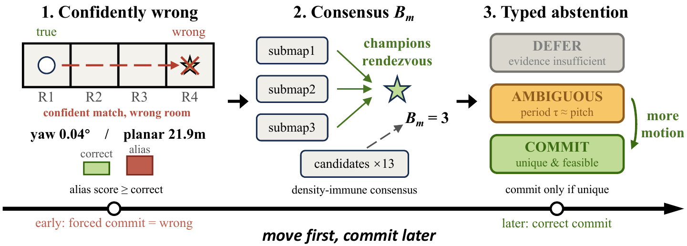

Move First, Commit Later: Selective LiDAR-to-BIM Global Initialization via Sequential Consensus with Symmetry-Aware Abstention
arXiv preprint arXiv:2607.17103, 2026. Submitted to IEEE Robotics and Automation Letters.
A selective LiDAR-to-BIM initialization framework that accumulates cross-frame evidence and defers pose commitment when symmetry makes the global match ambiguous.